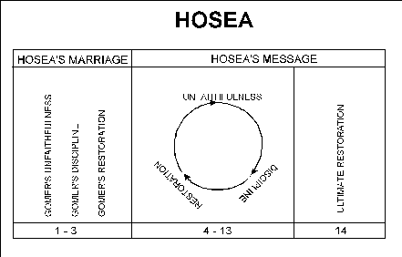

Meaning: salvation
the son of Beeri, and author of the book of prophecies bearing his name
He belonged to the kingdom of Israel.
“His Israelitish origin is attested by the peculiar, rough, Aramaizing diction, pointing to the northern part of Palestine; by the intimate acquaintance he evinces with the localities of Ephraim (5:1; 6:8, 9; 12:12; 14:6, etc.); by passages like 1:2, where the kingdom is styled 'the land', and 7:5, where the Israelitish king is designated as ‘our’ king.”
The period of his ministry (extending to some sixty years) is indicated in the superscription (Hos. 1:1-2). He is the only prophet of Israel who has left any written prophecy.
Hosea was a prophet who lived and prophesied just before the destruction of Israel in 722 BC. He preached to the northern kingdom. Throughout the book you will see that he refers to Israel and Ephraim. Ephraim was the largest tribe in Israel and sometimes the whole nation was referred to as Ephraim.
Hosea was commanded to take a wife who would become a prostitute as an example of God's relationship with Israel. Hosea was to manifest God's patience and love. Some wonder if Gomer was already a prostitute when they got married or if she became unfaithful later. They think that it presents a moral dilemma. Would God really command his prophet to marry someone that, according to Deuteronomy 22:20 was supposed to be stoned?
Deuteronomy 22:20 “But if this charge is true, that the girl was not found a virgin, 22:21 then they shall bring out the girl to the doorway of her father's house, and the men of her city shall stone her to death because she has committed an act of folly in Israel, by playing the harlot in her father's house; thus you shall purge the evil from among you.”
I have heard the arguments that she became unfaithful after they were married, and they are pretty good too. The phrase “adulterous wife” is similar to the phrase “quarrelsome wife.” You don't typically go out and marry a quarrelsome person. You marry someone whom you think is nice and will make you happy and find out later that they aren't so nice. So it may mean, “Go marry a woman who will prove to be unfaithful.”
But, if I had to cast my vote on the subject, I would say she was already a prostitute for the following two reasons:
It is hard to outline the prophetic books because the prophets alternate between listing sins, predicting judgment and then promising restoration, it is hard to pick out the macro structure or “big picture.” Hosea is probably the hardest.
One way to outline the book is as follows:

In the first three chapters we see Hosea's marriage to the prostitute, Gomer. His marriage to the unfaithful wife is to be an example of God's relationship with the unfaithful nation of Israel. In the first three chapters we alternate between the events in Hosea's message and God's explanation of how those events relate to the nation.
In 4-14: we see Hosea's message of warning to the nation of Israel. I think you can see a parallel between the three sections describing Hosea's marriage and the major sections in the last part of the book, within these individual sections, we have several “mini” sermons which themselves alternate between the listing of the sins, the pronouncement of judgment, the call to repentance and the promise of restoration.
If you keep that in mind as you study the book, it will help keep you from getting lost in the details.
Hosea prophesied during the reign of seven kings. Of these seven kings, five of them are listed here in our passage. A couple of the ones that followed Jeroboam didn't reign very long, so that may be why he left them out. Five of these seven kings are said to have continued in the sin of the first Jeroboam. 2 Kings 14:24, 15:9, 15:18, 24, 28, 17:21-23 all say the same thing about these kings:
“And he did evil in the sight of the Lord; he did not depart all his days from the sins of Jeroboam the son of Nebat, which he made Israel sin.”
What was this terrible sin that Jeroboam committed?
We need to turn to 1 Kings 12:26-29 for an explanation.
The context: After death of Solomon, the nation divided. (931 BC) Rehoboam was king of Judah in the south and Jeroboam was king Israel in the north.
Jeroboam is thinking to himself that he will lose power if people are allowed to go back to Jerusalem to worship God. I think Jeroboam knew that God did not want a divided kingdom, but he didn't care. Hosea 1:11 talks about future restoration and shows that God will one day reunite Israel and Judah.
In verse 28 we see that Jeroboam devised a way to stop that. He gave the Israelites a new god--golden calves. So is this the sin of Jeroboam--starting national idol worship in Israel? Well, yes, but how does that apply to us. Since we don't worship golden calves, does that let us off the hook? What is the timeless principle that we can conclude from this?
The sin of Jeroboam was that he sought to achieve his own personal agenda. He put himself and his desires before God and distorted God in order to do so. Then he avoided having to face how wrong he was by changing his understanding of God.
PRINCIPLE: Encountering God as He is invariably changes our personal agendas.
If Jeroboam had really been worshipping God, he would have seen God's glory and his own sinfulness and wanted to do God's will, even if that meant reuniting the kingdom. And as mentioned earlier, Hosea 1:11 shows that that was God’s will.
So Jeroboam never really encountered God during his required temple worship times. He didn't have a relationship with God, and to keep the rest of the nation from having a relationship with God he set up idol worship.
Jeroboam wanted the power for himself. And to make matters worse, he took a whole nation down with him. That is what makes his sin so great.
Isaiah 6:1-8 gives us a great contrast to Jeroboam and a great example of someone who was changed because of his encounter with God. After Isaiah saw the glory of the Lord, he recognized his sinfulness and when God asked, “Whom shall I send?” Isaiah said, “Here am I. Send me!”
So, when Hosea lists these kings at the beginning of his book, I think it is more than a way to place the chronological occurrence of his book. It is a way to emphasize the spiritual climate in which he is ministering. It is also foundational to understanding the problems Hosea will deal with in his book.
The word Jezreel means “God scatters.” This name is probably indicative of the fact that God was going to punish and scatter the nation for its sinfulness. I think it also has a double meaning since God says He is going to punish the house of Jehu for what he did at the valley of Jezreel.
1:4: What was so bad about what Jehu did at Jezreel? If you read the story about Jehu in 1 and 2 Kings, you see that God told Jehu to destroy Ahab's family. (Ahab was husband of the well known Jezebel and they promoted Baal worship in Israel. If you'll remember, Elijah was the prophet that prophesied to them.)
Many think the attitude expressed by the Lord (Hosea 1:4) contradicts the accounts in 1 and 2 Kings. But a closer examination of the historical record suggests a resolution to the problem. Jehu also killed Joram (2 Kings 9:24), Ahaziah, king of Judah (2 Kings 9:27-28), 42 of Ahaziah's relatives (2 Kings 10:12-14), and several functionaries of the Baal cult (2 Kings 10:18-28). Though the execution of Baal's servants was certainly in accord with the Lord's will (cf. 1 Kings 18:40), Jehu's attack on the house of David went too far. (BKCOT, p. 1380)
Notice 2 Kings 10:31 shows us that Jehu continued in the sins of Jeroboam. Jehu went beyond the call of duty. Not only did he kill the sons of Ahab, he killed all possible competition to the throne and claimed God's sanction for doing it. 2 Kings 10:28-29 shows that Jehu kept the golden calf worship. Why? Probably for the same reason as Jeroboam.
If we read between the lines in these references to Jeroboam and Jehu, we see the real problem. The problem was that they were pursuing their own agendas or goals and they changed their concept of God in the process because it was too painful to have the real God around.
Application: Are our own agendas more important than God? We need to recognize that we usually have internal agendas that are deeper than our worship experience. How often do we sit in church and think about other things?
For that matter, why do you go to church? For some people church is just a social club, for some it might be a place to make business contacts. Real estate and insurance folks find lots of people in the church that trust them because they go to their church. Some might go to maintain a certain reputation. I know from my past Air Force experience that Wing Commanders went to the chapel to set the example. They didn't dare stay home nor did they dare go to a church off base. And some people went to the chapel because the Wing CC went and they wanted to rub shoulders with him there.
Can you think of any other hidden agendas that are more important than God?
What is amazing is that we can come to church and pretend to worship and the whole time we really don't get in tune with God. We don't really worship God. We just go through the motions. We don't change our personal agendas, we just leave this building and go back to our same old lifestyle.
DO WE DISTORT OUR CONCEPT OF GOD?
If we cling to these agendas, we emphasize whatever about God fits our purposes. And we lose an accurate picture of who God is. This can be seen in 1 Kings 12:27 - Jeroboam knew that if the people had worshipped God then they would have done what God wanted and re-united the kingdom.
Jeroboam and the Jews changed God into a calf so that He was no longer a Holy God, but just some impotent object that sanctioned their own agendas of pursuing wealth and pleasure.
We have a tendency to pursue our own agendas and our own well-being by changing God into something that we think will help us meet our goals. Maybe we don't turn God into a golden calf, but we have other images of God that do the same thing:
Can you think of other images of God? What kind of a God do you have?
This means “no compassion.” The name of Hosea's second child was to remind people that God says He is not going to have compassion on the nation of Israel any more. But God would have compassion on Judah. vs 7 says they would not be delivered by bow, sword, etc.
Ho 1:7 But I will have mercy upon the house of Judah, and will save them by the LORD their God, and will not save them by bow, nor by sword, nor by battle, by horses, nor by horsemen.
After the Assyrians defeated the northern kingdom of Israel, they turned on the southern kingdom of Judah. The Assyrians conquered almost every little town in the southern kingdom, but the night before they were to attack Jerusalem, 185,000 Assyrian soldiers mysteriously died in their sleep. The next morning the army fled home.
Lo-ammi means “not my people.” Again, just a reminder of God's disowning them.
Despite God's discipline, God tells Hosea that He will eventually restore the nation in the following ways:
Look at these promises. Have they been fulfilled yet? No. Dispensationalists use passages like these where God makes these types of promises to Israel to base their belief in a literal future kingdom where Israel will occupy the land in peace and experience the blessings of God. If you don't believe in a millenium, you have to ignore these passages or say that they have already been fulfilled in history or are going to be fulfilled in the church.
How do we know if we have the same problem that Jeroboam had - that Jehu had - that all of Israel had?
Gomer is our object lesson. Gomer was a picture of Israel. We need to see if we are like Gomer. What was Gomer? She was a prostitute.
Hosea 2:2 What is the “adulterous look on her face?” (NIV)
There are a couple other parallel passages we should look at to help us understand this “adulterous look.” Then we will come back to Hosea.
Proverbs 7:6-22 Here we see a harlot who is cunning of heart. This woman thought her actions would satisfy her soul and she was out and about accomplishing her own goals. She thought her actions would do something for her own soul, but in fact, her actions would destroy relationships.
In verse 11 she is described by the words “boisterous” and “rebellious” - these are not descriptions of a feminine wife. It says, “her feet do not remain at home.” This is opposite from Paul's description of godly women who are “workers at home” in Titus 2:5.
In verse 13 it says she has a “brazen face.” This is the same look of adultery as in Hosea 2:2.
Notice also that she hides behind religious activity - vs 14-18. This reminds us that we can't tell from the outside what the true condition of the heart is. She was just going through the motions.
In verse 19 it says, “for the man is not at home...” We may be carrying the analogy too far but Israel and the church are often seen as the bride of God, so “the man” could be God. This is like saying God is not here, He can't fulfill me and so she is out to find fulfillment by her own resources.
But the truth is - God is here. He is always here and He can fulfill us.
Jeremiah 3:1-5 shows us another example of Israel playing the harlot.
Jeremiah 3:3 says, “You had a harlot's forehead..” This is the same adulterous look of Hosea 2: But we have a good description of what this adulterous look is all about:
First we need to back up to Jeremiah 2:27 to set the context. There we see further descriptions of their sinfulness and how they “had their own way.” It says, “They say to a tree, `You are my father' and to a stone, ‘You gave me birth.’” But in a time of trouble, they will say, ‘Arise and save us.’”
Ryrie points out that the words “tree” and “stone” refer to things used in the worship of Baal. So it seems more appropriate to apply this to how they looked to Baal to give them life and happiness. For us it refers to how we look to things or our spouses to give us life. We depend on our own efforts to make life work and when things don't work, we expect God to come through.
Then we see in Jeremiah 3:3 that the rains have been withheld. This is the same punishment as mentioned in Hosea 2:3. There is more significance to this than just the fact that God's punishment was to keep it from raining. This is a symbol of the bareness and desert-like condition of our souls when we try to live by our own means, playing the harlot with everything else and forsaking God.
Their plans did not satisfy them. This shows us that our own efforts are not going to work. They are going to lead to dryness. What was their response?
“You refused to be ashamed.” is a significant phrase because it shows one of the symptoms of the problem. What is another word for “refusing to be ashamed?” Pride. They thought they could do it on their own and when they failed, they didn't return to God apologetically or humbly. They came pridefully and angrily. We see what they said in verses 4-5.
What they say in verses 4-5 is amazing. They ask God why He hasn't blessed them. They don't see what they are doing wrong. But God shows at the end of verse 5 that “they have had their way.” They have been following their own agendas.
This is not actually stated, but it is implied throughout the passage in both Jeremiah and in Hosea. And it is what naturally happens when a proud person doesn't get what he expects.
So in Jeremiah we see that they had a harlot's forehead. They saw no inconsistency in their actions and were not ashamed.
Back to Hosea 2:
We've already discussed the symptoms in our outline while in Jeremiah so we'll just run through the verses in Hosea 2:
In verse 3 we see the dryness that we talked about in Jeremiah 3.
In verse 5 we see that they pursued their own interests thinking that that would satisfy. They thought that would bring happiness.
Verses 6-7 show us that our methods don't work. It says, “she will pursue her lovers but not overtake them.” God causes our own methods to fail to lead us back to Him.
Perhaps a good example of how we can pursue happiness in things is having the idea that having enough money will satisfy. But even when Rockefeller was once asked how much money was enough, do you know what his answer was? He said, “A little more.”
In verse 8 we see a reference to grain, wine and oil. Baal was the Canaanite god who supposedly controlled storms and was responsible for both agricultural and human fertility. The Canaanite “Legend of Keret” associated Baal's rain with agricultural blessing in the form of grain, bread, wine, and oil (cf. J.C.L. Gibson, Canaanite Myths and Legends. Edinburgh: T. & T. Clark, 1978, p. 98).
So this shows that they didn't recognize that God was the true source of their blessings, and in the same way, we don't recognize that God is the true source of happiness and all that we have
The last part of verse 8 says, “which they used for Baal.” They even took the things that God had given them and used them to worship another god. In the same way we can take something God has given us and use it to pursue whatever we think will bring us happiness.
What is even worse is when we even recognize that God gave us something, like the gift of Pastor or money or whatever, and then not depend on God as we exercise our gift or use the money, etc. We actually use it to serve our own purposes. We do just like the text says, We “use it for Baal.”
Application: How does all this we have talked about apply to us?
Israel was pretty bad. They totally forsook God. We often compare ourselves to them and think we aren't nearly so bad. We certainly haven't totally forsaken God. We certainly don't worship golden calves. Maybe we don't worship golden calves, but we have other false concepts of God and other things we seek after. Maybe we don't totally forsake God, but we mix our dependence on God with our dependence on other things.
We see nothing wrong with depending on our own resources and depending on our bank account, our work, our wife, our kids, our ministry to fulfill us. We only use God as a Force or Genie to help us in our pursuits. Listen to your prayers. How many times do you ask God to “HELP” you do something. When you do that are you saying that you can do most of it ... that you just need a little help to finish the task? It is man's natural tendency to want to make it on his own. Our natural tendency is to want to earn our salvation by being good. But even after we recognize that salvation is totally by faith, we still want to have lists of do's and don'ts. We think if we change our behavior we will be able to accomplish what we want. Whether it is overcoming depression or some bad habit.
We are determined to pursue our own self-interests, so we redefine God. We have decided what it means to really enjoy life - for most of us that is having enough money so we can buy all the things we think will make us happy - so we expect God to bless us.
For others it might be that perfect relationship with the opposite sex, because we think that person will be able to fill our deep longings, so we expect God to bring along the perfect mate. And when He does, and the marriage is not perfect like we had planned, What do we do? What do you do? When you pray for something and you don't get it, who do you blame? Do you blame God?
Personal Example:
When we lived in Germany we had plenty of money, job security. We were pillars of the church: I was chairman of Deacons, an adult SS teacher. My wife was the Nursery coordinator. We had great friends who like us had also been separated from family and friends in the U.S. and so were ready to make new friends.
We thought we trusted God, but we weren't sure, because we didn't need to. We had too many resources that we could depend on. But God decided to take away those resources and cause a little dryness in our lives:
What was my response to all this? Even in the midst of studying about God and filling my head with knowledge about God, when the problems and trials came, and there were a number of them, I found myself thinking and saying things like...”God caused my children to have another ear infection to drain our finances ...” or “God caused the car to break down to drain our finances ...” etc. When I didn't get the job I thought I should have and the money was not coming in like I thought it should have, I felt like God was letting us down. I couldn't understand why he let me get the hernia last summer which kept me from getting any jobs that required physical work.
I had grown up hearing stories from Mom and Dad and my missionary aunts and uncles of how God provided the things that they really needed miraculously. They got checks in the mail for the exact amount of their rent or whatever. I guess I was expecting that. And I was actually blaming God for the problems and feeling like He wasn't coming through for us. At times I even thought it was unfair that I would give up a good Air Force career to serve God full time as though He owed it to me. Some guys I know are able to go to seminary without working at all because they are supported by some big church, or Campus Crusade or they are financially independent. God decided not to send us through seminary like that and I guess I thought He should have, after all, look what I was doing for Him...
I had redefined God. God was unfair. I was too proud to recognize that we live in a fallen world and people get hernias, babies have ear infections, cars break down, people have to work for a living and jobs are hard to find.
I was saying I will trust God and I expect Him to come through, because I'm doing good. But the basis for God's good is not our good works, because we could never earn God's favor. Our best efforts could only earn us a place in hell. It is purely God's grace that anything good ever happens to us. The bad things in life happen because we live in a fallen world and that is man's fault.
Somehow we get the idea that our trouble obligates God. Notice Jer 2:27 again where it says, “In the time of trouble they will say, “Arise and save us.” But our trouble does not obligate God. We deserve all the bad things that come our way. We live in an evil world which is the result of man's sinfulness. God is completely justified in destroying all of us. It is only because of His grace that He doesn't.
So don't get overwhelmed by the trouble and the evil in the world and wonder why God isn't fixing things. Instead be amazed and overwhelmed that God doesn't send us all to hell. It is a wonder that God sent his son to save us.
The unashamed look of the prostitute doesn't recognize that. The unashamed prostitute says, God ought to come through and change my husband, or get my kid off of drugs. He owes this to me. When God doesn't do everything we want, we feel we are justified in resolving our problems by our own method and we redefine God to make our actions ok.
Instead we need to be ashamed at our actions, our unbelief and our lack of trust. Recognize that if we don't, our actions and our dependence on circumstances are going to lead us to a life of spiritual dryness, because we do not have the living water refreshing us.
Review: What is the problem?
Basically our problem is putting ourselves first. Like Jeroboam, Jehu and Gomer we seek after our own interests and ignore or distort God in the process.
What are the symptoms?
So, ask yourself if you are guilty of doing this.
What is God's response to all this?
What is God's reaction to Israel forgetting Him in vs 13? After describing their sin and bringing them to the wilderness, vss 14-23 show that God is also merciful and now he is enticing them back to Him. God uses these wilderness experiences to bring us closer to Himself.
I think God's response shows us two things :
(1) We are secure in God's love for us. In their book The Language of Love, Gary Smalley and John Trent say that one of the pillars of a good relationship is security - knowing that you are loved. And certainly God's perfect love is demonstrated by the fact that He still loves us when we keep running away and by the fact that He sent His son to die for us.
(2) In our ugliness, God doesn't beat us. He entices us with what we deeply want. He knows we thirst and He offers living water. He knows we feel ugly and want to be enjoyed and He offers perfect love. He knows we want to be perfectly accepted, and He perfectly accepts us. What we deeply long for can only be met in God.
I think most of you are familiar with Larry Crabb. So you may be familiar with what he describes as the three areas of needs:
Casual longings | for convenience, comfort and personal preference. We prefer that it not rain on our picnics and fishing trips. We don't want the car to break down. |
Critical longings | for meaningful human relationships. We want to see relatives come to know Christ. We want to see sick relatives regain their health. We want to have a great marriage... |
Crucial longings | which are the deep thirsts of our innermost being. What satisfies our casual and critical longings could never satisfy our crucial longings. Only Christ can fulfill this. |
Although the story of the woman at the well in John 4: is about salvation, the setting and Christ's words show us this same principle. Christ told the woman at the well that whoever drinks of the well water will thirst again, but whoever drinks of Christ's water will never thirst. The only thing that will ever satisfy these crucial longings is a relationship with God.
Only God can meet those crucial longings, but we spend all our energy trying to fill the first two categories not realizing that if we work on the relationship with God, He will take care of the rest.
Notice in Hosea 2:14 that He leads them into the wilderness or desert. He must first lead us to the place where we are dried up in our own resources. Then we will be more likely to turn to God.
It also occurred to me that when the children of Israel were in the desert, what did they do for food? God gave them manna. How much did he give them? Just enough to get by. The shoes on their feet didn't wear out, etc. God didn't give them a surplus, but He provided for their needs. I think there is a parallel between what they went through and what we sometimes go through.
When God leads us into the desert, we need to understand He isn't taking good things away from us. He is taking away things that we thought were good for us, so that all we will have left is what really is good for us, and so we will depend on Him.
What is the result of being in the desert?
2:14 says He speaks kindly to her. I think being in the desert makes us more receptive to God's kind words.
2:15 shows that God will bless them. The valley of Achor was not a good memory for Israel. That was where Achan committed his sin and God caused the Israelites to be defeated by Ai. But God can turn our times of defeat into a time of hope. He did so at Achor. After the Israelites stoned Achan and got right with God, they were able to defeat Ai.
Hosea 2:15 says “she will sing there.” What kind of song will she sing? Look back to Ex 15: where the nation sang a song about their deliverance from the Pharaoh and the miracle of the Red Sea. This is the song she sang in her youth. It is totally about God. Too often the testimonies we hear today are about how I am no longer doing drugs or how I can now behave as a Christian should. The song they will sing and the song we need to sing is one that is so focused on God that it leads to forgetting self.
2:16 says they will call God “Ishi” which means husband and not “Baali” which means owner or master. I think that speaks for itself. It is an excellent word picture to describe a new and better relationship with God.
The necessary ingredient for us to change from our independence - the solution to our problem of pride - is having a relationship with God. We can know that God loves us perfectly, that He accepts us the way we are. We can be secure in Him and depend on Him. The solution is having a relationship with Him.
In Hosea 1: God breaks Hosea's heart to prepare him for ministry. He learns that his wife is going to be a prostitute. Certainly this broke his heart. And he learns that God's attitude toward His people is heartbreak. He learns how to have God's heart.
In Hosea 2: we see what is going to happen in the future. How Israel will sin, how God will respond and how Israel will finally return to God and have the relationship with Him that they were supposed all along.
In Hosea 3: we get back to the present and we see that God wants Hosea to demonstrate and to understand His grace. So He tells Hosea to buy Gomer back and to live with her without any physical encounters whatsoever. This is significant! Why? Because this passage shows us the process for restoration to God. There are two simple steps in the process. They are simple to say, but not simple to do.
What was Gomer's way of earning a living? It was her body. It was the way she had always earned the love and acceptance of others - or so she thought. Notice now, Hosea is telling her she is going to live with him without using the one thing she thought she had that could earn his love. He is showing her that his love for her is not dependent on what she can do. His love is dependent on his character. All that she had going for her, he stripped from her.
3:4 In the same way, Israel was going to be stripped of all the things they thought were making them acceptable. Their king, their idolatry, their national sovereignty, etc. would be taken away. There was going to be a time when God would strip away all the illusions
Just like Gomer was forced to live with Hosea without depending on her own resources for coping with life and manipulating those around her, we also need to learn to stop depending on our own resources.
3:5. After a period of time ... After living without what they thought they needed for life... Then they “come trembling” to God. That is the proper response. Not to come proud... Not to come with the attitude of, “I need a little help here...” “I'm doing fine but I owe $500 and only have $200, why don't you provide the difference.” We need to really tremble and totally depend on God.
That brings us to the second step. Step 1 was to stop depending on ourselves.
We don't want to depend completely on God because we fear that He won't come through. We really don't believe He is in control. We really don't believe He knows what is best for us. So we decide what is best for us and we try to control our life with whatever resources we think we have.
How do you depend on God?
What is the most common command given to us in the NT? To pray. Prayer shows dependence on God. Prayer is the communication that builds a relationship with God.
Most of you have spent enough time in a Bible teaching church that you know the facts, but what might be missing in your lives and what is often missing in my life is that quiet time when we just pray.
I know I am often too busy to make time for that, and I think that is what makes us spiritual. It is not how much we know. It is how much time we spend in prayer and communication with God. Prayer is where we encounter God.
We've just seen how Hosea's marriage was a living illustration of God's relationship with Israel. Now we are given several messages that describe Israel's adultery and sinfulness, their judgment and the promise of their ultimate restoration to God. It is difficult to outline this section because it is cyclical in nature. Perhaps this is Hosea's recording of many sermons given over several years.
One of the favorite literary methods for a prophet to proclaim his message was in the format of a legal trial or lawsuit. That is what Hosea does here.
He begins by saying, “Listen up Israel!” “God has a 'courtcase' against you.”
There are three things he deals with. The English smooths this out, but in the Hebrew there is an emphasis on the lack of three things because he repeats the “There is no...”
There is no faithfulness There is no loyalty-love There is no knowledge or acknowledgement of God in the land | Jr#a*h* yb@v=w{y-mu! hw`hyl^ byr! yK! tm#a$-/ya@ yK! ds#j#-/ya@w+ .Jr#a*B* <yh!l)a$ tu^D~-/ya@w+ |
Throughout chapters 4-13 Hosea list numerous examples of how these things are lacking in the nation of Israel.
Hosea 4:6 says, “My people are destroyed for lack of knowledge.” This is the most misquoted passage in the Bible. I've even heard it quoted by health food nuts to support their agenda. Lack of what knowledge? Look at the context - 4:1 says “there is no knowledge of God in the land.” Knowledge of God is the context. The word also means to acknowledge. I think both definitions are appropriate:
4:15-17. Israel was more degenerate than Judah and Hosea is warning Judah to stay away from Israel and not to follow in her footsteps.
6:4 is a good summary verse for the book of Hosea. God is exasperated with Israel because there is no loyalty. vs 6 says, it is the heart - “loyalty” - which matters not external ritual. It is knowledge of God - relationship with God - that matters, not external ritual.
7:7 shows us that they did not call on God. They depended on foreign alliances (their own resources) rather than God.
7:11 They will do anything and try anything rather than depend on God. Even go to their enemies for help.
7:16 says they turn, but not upward. Does this remind you of you and me turning from one thing to another, searching for something to make us happy, something to provide our needs?
8:2 gives me the impression that they are going to God with the attitude of, “God, you owe me! Come through for me.”
13:1-2 There is much in Hosea about Baal worship. It is important to understand the thought and practice that went with Baal worship. Baal was the Canaanite god of fertility. The earth was viewed as female and Baal was the male that fertilized her and was supposedly responsible for the rain and plentiful crops. The people thought that they could “arouse” Baal if they performed sex acts in his temple. So temple prostitutes were plentiful. You can see how conveniently this practice pandered to the lusts of the flesh with the result that it destroyed marriage and family life. It also was sinister in that the people thought they could manipulate God.
But nothing could be further from the truth. God was in control and He was going to show them by drying up the land and having the very nations they depended on for security destroy them.
13:5-6 shows us the principle - When things are tough, we have a tendency to depend on God, but when life is easy, we forget Him.
No one illustrates this better than Jacob. Hosea thinks so too. He mentions Jacob in 12:2-4. If we turn to Hosea 12:2-4 we see a good example of someone who came to the end of their rope - to the end of their own resources and finally began to trust in God. Hosea 12:4 says Jacob wept and begged for God's blessing. This is the same attitude of trembling that Hosea mentions in 3:5. Because Hosea mentions Jacob as an example, let's digress a little and look at Jacob's life and what caused him to weep and beg God:
What does it mean to come trembling before the Lord? Jacob's broken cistern was manipulating people. In modern language Jacob came from a real dysfunctional family. Jacob's mother had problems. When twins are born, she picks the non-hairy weaker looking one to possess. She takes over his life and arranges everything for him. She arranges for him to get the blessing, she arranges for his deliverance from Esau by sending him to her brother Laban, telling him everything will work out fine.
In Genesis 24:15 the marriage arrangements made by Abraham's servant for Isaac and Rebekah are all made between Laban and Jacob. Why? The father is not dead. Bethuel is only mentioned in vs 15 as being the father and in verse 50 where he just acquiesses and gives permission for Abraham's servant to take Rebekah. All the negotiations were made with Laban. I don't think it is reading too much into the text to conclude that Bethuel was an uninvolved father. We can see the results in Rebekah. She had no advocate, so she took over and became a controlling woman. She took over the family.
What about Isaac? If you read Genesis and look for all the things Isaac did. You'll find that he really didn't do anything significant.
I was making a chart of Genesis and plotting the main characters or patriarchs to show what their main contribution and character were, and all I could come up with to describe Isaac was “Passive Acceptance.” He accepted his father's near sacrifice of him, which is good, but the main point of that event is Abraham's faith. And Isaac did nothing else of significance in the whole book.
All this weakness in Isaac let Rebekah take over. It was her natural tendency and Isaac's natural tendency. So she took over the family and Jacob's life.
Jacob adopted his mother's controlling nature and became a manipultor to get his way. His whole life is a series of manipulations - bargaining for his birthright, tricking Isaac for the blessing, the whole episode with Laban.
What did God do to Jacob when He wanted to get hold of Jacob's life? He revealed Himself to him. God revealed Himself to Jacob 7 times. He showed Jacob that he had a problem. Sure, it was shaped by your dysfunctional family, but that is not the problem and there is no one to blame but yourself. So don't think you are just a victim. Jacob's problem was he thought he could make it on his own without God. He had reacted wrongly to his upbringing. His upbringing was no excuse.
That is something we really need to emphasize because of the way our society thinks. We are not helpless victims. We either react wrongly to our environment or we act correctly in spite of our environment.
In Genesis 32: we have the account of the wrestling match with God. Jacob is coming back to meet Esau and is wondering how his brother is going to react. When he left the land Esau was trying to kill him. He has sent his servants ahead (vs 3-5), bearing gifts to bribe Esau. He had resources he could use to save himself.
In verse 6 the messengers come back and say that Esau is coming to meet them with 400 men. It looks like Esau is bringing warriors to destroy them.
In verses 7-8 we see that Jacob devises another plan to save himself. He decides to divide his family putting Leah and her children and servants in one group and Rachel and her children and servants in another group. That way he can cut his losses if one group is destroyed.
Verses 9-12 show Jacob praying to God for deliverance. It looks like Jacob is going to finally give up and depend on God, but verses 13-23 show that he was really still trying to control the situation and save himself.
So I went back and re-studied his prayer in verses 9-12. It may be my imagination, but I think Jacob is trying to manipulate God in his prayer.
In verse 9 he is claiming God's promise that He would bless Jacob.
In vs 10 he gives God the credit for his prosperity and then he again claims God's promise to bless him in verses 11-12. It seemed to me that Jacob was almost saying to God, “Come through for me God. You promised me. You owe me!”
So I don't think his prayer was one of total dependence on God. Verse 13 proves it when we see he is going to continue with his plan to bribe Esau and to divide his family into two groups.
But that night God, who is still trying to get through to Jacob, meets with Jacob. Verse 24 says, “Jacob was left alone.” It is such a little phrase, but I think it is very, very important. Jacob had been stripped of all that he had. He had run out of resources. Now he was ready to meet with God.
Verse 26 Why does God say let me go? Because daybreak would have revealed His face to Jacob and Jacob would have died. But Jacob won't let go. He says, “I won't let you go unless you bless me.” Jacob would rather die than live without God's blessing.
Jacob is at the end of his rope. His life is a mess. He is all alone, he has exhausted his own resources and has to face Esau alone. Life is intolerable unless he has God's blessing.
Perhaps that is an illustration of trembling -- having the attitude, “I'd rather die than live without God's blessing.”
Incidentally, after he meets with God, we turn to Genesis 33:3 and see that although he left the people divided into two groups, instead of hiding behind them, he now goes out in front of them to face Esau alone. He now is depending on God and not his own resources.
After all is said and done, God will ultimately restore His people. He promised many things to Abraham, Jacob, David, etc. and He will keep His promises. How is restoration accomplished?
14:1-3 give a great summary of what is involved in turning back to God.
14:1 - They have returned to the Lord because relying on their own methods and resources did not work.
14:2 - “take away all iniquity” - This is confession of sin.
“. . . receive us graciously” - this shows that they were no longer proud. They recognized that God didn't owe them. It was pure grace that God would have anything to do with them.
Why do they want God to receive them? So He will give them things? No. It says, “That we may present the fruit of our lips.” Their motive is a pure one -- It is so that they can worship Him. The want to have that relationship with Him that He wants with them.
14:3 shows us that they they finally recognize that their own resources will not satisfy them or save them. Assyria cannot. Egypt with all its horses cannot. Their idols cannot. They are not depending on their own resources. They are depending on God.
Now we get to the results:
14:4 “I will heal their apostasy.” Notice it is not their self-image that He will heal. Today all the talk is about improving your self-image. It is important to have a biblical self-image, but that is not the core problem. We've seen what the core problem is. And this shows us that the result to us will be healing.
But Christianity is not a selfish religion. We are not supposed to be self-centered. We are to be others centered. One of the reasons we should want to get well is so that we can serve others.
I think verses 5-7 deal with this principle. There is a a lot of plant and tree imagry - “blossom,” “take root,” “shoots will sprout,” “live in the shadow,” etc. Perhaps this is symbolic of what we will be like if we return to God and really worship Him as it says they did in verse 2. Hosea uses symbolism or another word picture which means we will be like a shade tree for others, where others find refreshment. We won't be VDPs (Very Draining People). People who manipulate others and use them to meet their needs. Instead we will be shade trees.
We need to face life honestly, evaluate how we are trying to use our own resources to cope and instead depend on God. As we do, we will learn joy, our roots will grow deeper and our shade will increase and we will refresh other people and not be VDPs.
My question to you is, what are you depending on? Is it money? Is it people? Are you proud? Have you been trying to do it own your own? Do you think you deserve God's favor? Do you blame God when your plans don't work out?
If you are guilty of this and I think we all are much of the time, the solution is recognizing that we have a problem, relinquishing our efforts to control life and really get to know God, and then, if we really know Him, we will be sure that He can and will take care of us better than we can ourselves. And then we will depend on Him.